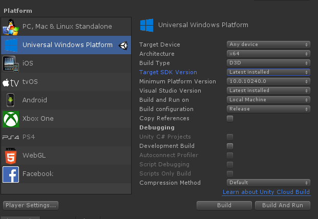

生成和部署MRTK
要将应用程序作为独立应用程序在设备上运行（适用于HoloLens，Android，iOS等），生成和部署步骤需要在unity项目中执行。生成和部署使用MRTK的应用程序就像生成和部署任何其他Unity应用程序一样。没有特定于MRTK的说明。请阅读以下内容，了解有关如何为HoloLens生成和部署Unity应用的详细步骤。了解有关在其他平台上生成的更多信息，请访问发布版本.
为HoloLens 1和HoloLens 2（UWP）生成和部署MRTK
有关如何为Hololens 1和Hololens 2（UWP）进行生成和部署的说明，请访问：将应用程序生成到设备 .
提示: 为WMR，HoloLens 1或HoloLens 2进行生成时，建议生成设置“Target SDK Version”和“Minimum Platform Version”看起来像下图所示：

其他设置可以不同（例如，“Build Configuration/Architecture/Build Type”，而其他设置始终可以在Visual Studio解决方案中更改）。
确保“目标SDK版本”下拉列表包含选项“ 10.0.18362.0”-如果缺少此选项，最新的Windows SDK 需要安装。